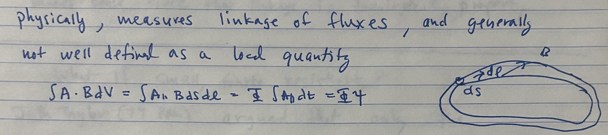
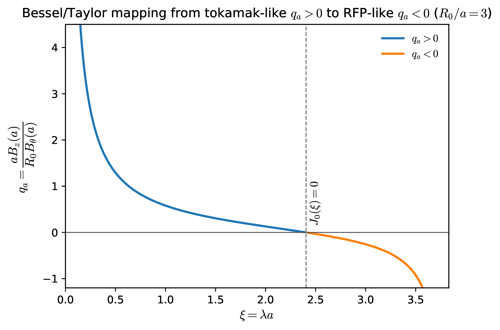
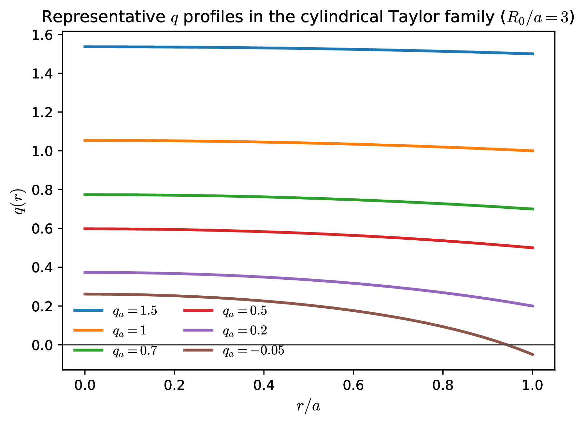
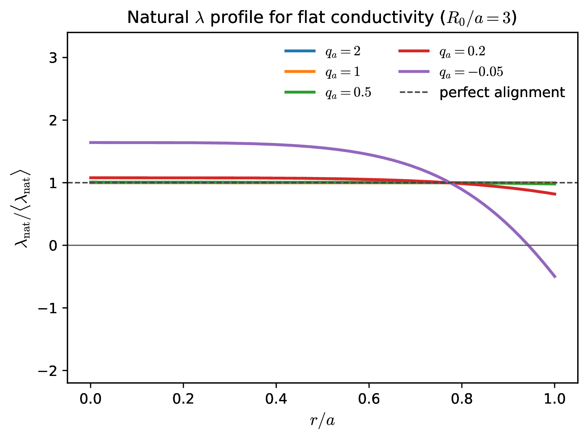
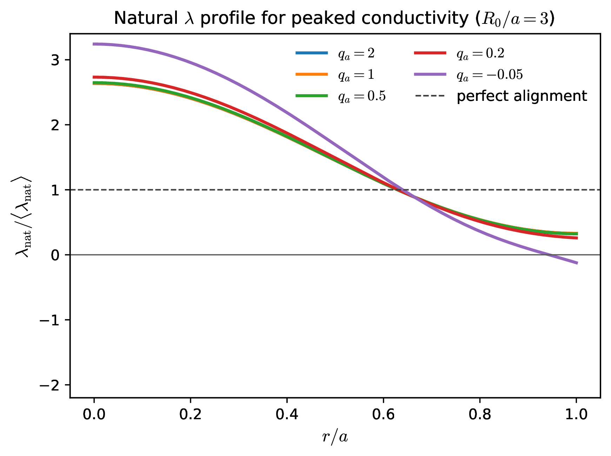

Magnetic helicity is the quantity that survives when ideal flux freezing is only weakly broken. That makes it the natural organizing principle for magnetic relaxation. Magnetic energy can be rapidly dissipated by reconnection and short-wavelength structure, but helicity is much harder to remove because it measures the large-scale linkage, twist, and writhe of the field.
For toroidal current-carrying plasmas this is not just a topological curiosity. Inductive drive tends to push the plasma toward a natural current profile set by Ohm’s law and the conductivity profile. That natural profile is often more peaked than the plasma can stably support. Tearing, quasi-interchange, and related MHD activity then act as a self-organization mechanism that broadens \(\lambda \equiv \muo \,\mathbf J\!\cdot \!\mathbf B/B^2\) back toward marginal stability. In that sense, sawteeth, reversed-field-pinch relaxation, spheromak sustainment, flux pumping, and non-solenoidal startup methods all belong to one family of ideas: helicity is injected or approximately conserved, while the current profile reorganizes.
The modern story begins with Elsasser, who emphasized magnetic linkage in dynamo theory, and with Woltjer, who proved that magnetic helicity is conserved in ideal MHD and that the minimum-energy state at fixed helicity is force free Elsasser [1956], Woltjer [1958a,b]. Kruskal and Kulsrud gave the related toroidal-surface formulation that later became standard in fusion applications Kruskal and Kulsrud [1958]. Taylor’s crucial step was to argue that in a weakly resistive plasma reconnection can rapidly reduce magnetic energy while leaving the global helicity almost unchanged, so the plasma relaxes toward a constant-\(\lambda \) state Taylor [1974]. That point of view became central to reversed-field pinches, spheromaks, and compact toroids Prager [1990], Ortolani and Schnack [1993], Jarboe [1994].
The same logic later reappeared inside tokamaks in a less dramatic but equally important way. Jensen and Chu, and then Boozer, made explicit how helicity injection appears in a torus through the loop-voltage times toroidal-flux bookkeeping that is natural for transformer-driven plasmas Jensen and Chu [1984], Boozer [1986]. Inductive current diffusion tends to peak the central current profile; MHD activity then broadens it again. Sawteeth are the classic example, but the same general idea underlies modern flux-pumping and hybrid-scenario physics, where a saturated \((m,n)=(1,1)\) structure can maintain \(q_0\gtrsim 1\) without periodic crash-recovery cycles Jardin et al. [2015], Krebs et al. [2017], Jardin et al. [2020].
Two cautions matter here.
First, magnetic helicity is gauge dependent if magnetic flux crosses the boundary. For open systems one should really use relative helicity. In the derivations below we mostly assume a closed or perfectly conducting boundary with \(\mathbf B\cdot \hat {\mathbf n}=0\), where ordinary helicity is well posed.
Second, \(\lambda =\muo \,\mathbf J\!\cdot \!\mathbf B/B^2\) is a very useful proxy for tearing drive, but it is not a complete stability criterion. Tearing still depends on rational surfaces and matching indices such as \(\Delta '\), while resistive-interchange activity also depends on pressure gradients and magnetic shear. The point of this lecture is not that \(\lambda \) tells the whole story; it is that self-organization is easiest to understand when one first asks what profile inductive relaxation is trying to create.
Definition and topological meaning. Magnetic helicity is defined by

Flux-tube interpretation. For a thin flux tube carrying flux \(d\Phi \), one may write
Evolution equation. Starting from
Resistive decay of energy and helicity. If the only non-ideal effect retained in Ohm’s law is scalar resistivity,
A useful spectral cartoon is obtained by writing \(\tilde B = \sum _{\mathbf k} B_k e^{i\mathbf k\cdot \mathbf x}\). Then schematically
Force-free equilibria. A force-free equilibrium satisfies
Constrained minimization. We therefore minimize the magnetic energy,
Using
We can see the boundary term vanishes by noting that \(\hat {\vect {n}} \times \delta \vect {E} =- i \omega \hat {\vect {n}} \times \delta \vect {A}=0\) on a flux conserving boundary. Therefore
Cylindrical Bessel family. Inside a cylindrical conducting shell the constant-\(\lambda \) state has the familiar form
Writing \(x=r/a\), \(\xi = \lambda a\), and \(A=R_0/a\), the safety factor becomes


The same parameter \(\xi =\lambda a\) that labels the Taylor family also labels the shear. Broad tokamak-like states with \(0.5\lesssim q_a\lesssim 2\) have comparatively weak shear across much of the minor radius, while RFP-like states and strongly peaked-current tokamak states have much larger shear. That distinction matters below when we ask whether the natural inductive profile already resembles a flat-\(\lambda \) state or whether MHD must reorganize it.
Why the loop voltage can appear. Equation (32.7) looks as though a closed conducting boundary would leave only the volume term \(-2\int \mathbf E\cdot \mathbf B\,dV\). That is correct for a simply connected volume. A tokamak is subtler because the plasma region is toroidal and therefore multiply connected: the vector potential has nontrivial toroidal and poloidal loop integrals that cannot be removed by a single-valued gauge. In that case the gauge-invariant quantity is not the naive \(K\) but the helicity content of Boozer Boozer [1986], Jensen and Chu [1984],
Evolution with solenoidal drive. Let \(V_s\) denote the toroidal loop voltage produced by the central solenoid. Differentiating Eq. (32.30) and using Eq. (32.7) gives
From \(\mathbf E\cdot \mathbf B\) to the plasma loop voltage. On a set of closed magnetic surfaces one may write
because \((\mathbf B\cdot \nabla \phi /2\pi )\,dV=d\psi \,d\theta \,d\phi /(2\pi )^2\). Therefore
No contradiction with ideal conservation. There is no conflict between Eqs. (32.8) and (32.35). Equation (32.8) refers to the ordinary helicity \(K\) in a simply connected closed system with no externally linked transformer flux. Equation (32.35) refers to the gauge-invariant helicity content \(K_0\) of a multiply connected torus, for which changing the linked solenoidal flux injects helicity through the term \(2V_s\Psi \). What looked like a pure boundary/gauge subtlety in Eq. (32.7) becomes an explicit loop-voltage term once the toroidal topology is treated correctly.
Surface-averaged Ohm’s law. Reuse Eq. (32.32) for a stationary axisymmetric discharge. Dotting Eq. (1.9) with \(\mathbf B\) gives
Definition of the natural profile. Motivated by Taylor’s constant-\(\lambda \) state, define the surface-averaged proxy
Bessel-model evaluation. In the cylindrical Taylor family of Eqs. (32.26)–(32.27), \(\mathbf B\cdot \nabla \phi \) is proportional to \(B_z\), so Eq. (32.40) becomes
For the conductivity we may consider two simple models. A flat electron-temperature profile gives


A particularly convenient scalar measure of misalignment is
Why this matters for tearing and interchange. The cylindrical tearing lecture showed that peaking of the parallel-current profile is exactly what provides free energy for \(\Delta '\)-driven island formation. The resistive-interchange lecture then showed that if pressure is also peaked and magnetic shear is low, pressure-driven parity can join the story as well. The present lecture provides the missing zeroth-order picture: before any instability appears, inductive relaxation is already pushing the system toward \(\lambda _{\rm nat}(\psi )\). Magnetic self-organization is what happens when the plasma refuses to stay on that natural profile.
This viewpoint is especially useful for the tokamak sawtooth problem. If a peaked \(T_e\) profile forces \(\lambda _{\rm nat}\) to peak strongly, the central safety factor is driven downward, and \((m,n)=(1,1)\) activity becomes unavoidable. Depending on the pressure profile and central shear, the nonlinear saturating structure may look more tearing-like, more resistive-interchange-like, or more quasi-interchange-like; in practice the distinction is often one of emphasis rather than of separate worlds. Conversely, when \(T_e\) is flat enough that Eq. (32.42) is already close to constant \(\lambda \), the plasma can live in a broad-current, low-sawtooth state.
Low shear versus strong shear. The same comparison also clarifies why tearing and interchange often trade places rather than coexisting with equal strength. In the alignment window \(0.5\lesssim q_a\lesssim 2\), the current profile is broad and the shear is relatively flat; if the electron-temperature profile is also broad, the natural inductive state is already close to constant \(\lambda \) and there is little reason for a large sawtooth-like relaxation. Those same low-shear states are precisely the ones that are most vulnerable to resistive-interchange or quasi-interchange behavior if the pressure gradient is allowed to sharpen. By contrast, RFP-like states and tokamaks with strongly peaked current profiles generally have much stronger shear. That strong shear helps dramatically against interchange, but it comes with a more peaked \(\lambda _{\rm nat}\), so the price is a greater drive for tearing and magnetic relaxation.
A useful viewpoint. A very compact way to say all of this is the following. Inductive systems are almost never trying to reach the marginally stable current profile. They are trying to reach the natural resistive profile imposed by Ohm’s law and conductivity. Tearing, sawteeth, and flux pumping are the mechanisms that stop them.
RFPs and spheromaks. Reversed-field pinches and spheromaks are the cleanest laboratories for Taylor relaxation. There magnetic self-organization is not a small correction to an otherwise quiescent equilibrium; it is the main event. The Bessel family is therefore not just a classroom model but a genuine first approximation to the observed states, with relaxation repeatedly clamping the current profile near the edge of tearing marginality Prager [1990], Ortolani and Schnack [1993], Jarboe [1994]. In that sense spheromaks are closely connected to the present discussion: they are systems in which helicity injection and magnetic relaxation are not side issues but the confinement principle itself.
In resistive MHD its easily shown that
Considering the characteristic decay times of the large scale field gives similar times scales for resistive decay of both magnetic energy and helicity
During relaxation, however, there is a broad spacial spectrum of modes generated. In the RFP, for example, the mode spectrum consists primarily of \(m=0,1\) modes and a broad range of \(n\) numbers. Figuratively,
When the spectrum consists of considerable short wavelength "turbulence" (large \(k\) modes) Helicity wins out as the energy quickly dissipates. Thus magnetic energy dissipates much faster than helicity, justifying Taylor’s hypothesis.
Real plasmas do not land on an exact global Taylor state. The relaxed profile is instead set by a competition between inductive peaking, finite conductivity gradients, and the requirement that the dominant tearing spectrum sit near marginality. In an RFP this means that the plasma is repeatedly peaked by Ohmic drive and then relaxed by reconnecting activity. The outcome is not \(\lambda (r)=\text {const}\) everywhere, but a broadened profile with residual structure, especially near the edge where \(T_e\) and \(\sigma \) fall rapidly.
The measured fluctuation-induced emf. A useful way to say this is to write the mean parallel Ohm’s law as
In mean-field language one would write
An opinion on terminology. The formal analogy with mean-field dynamo theory is real, and the RFP literature noticed it very early—apparently going back at least to Gimblett and Watkins Gimblett and Watkins [1975], Ji and Prager [2002]. But I would still use the word dynamo cautiously here. In the solar \(\alpha \Omega \) problem the large-scale magnetic field energy is regenerated from mechanical free energy associated with convection and differential rotation. In the RFP the external circuit has already supplied the helicity and current drive; the measured \(\langle \tilde {\mathbf v}\times \tilde {\mathbf b}\rangle \) mainly redistributes current and flux so that the plasma can remain near a marginally stable state. In fact, the magnetic energy explicitly decreases. Calling this term a fluctuation-induced emf, or a relaxation emf, is therefore cleaner than implying a self-excited astrophysical dynamo in the strict energetic sense. By the same token, “flux pumping” in tokamaks is best viewed as closely related jargon for the same kind of mean emf, not as a wholly separate mechanism.
Profile models beyond the exact Taylor state. Several phenomenological models are used once one gives up on a globally constant \(\lambda \):
Here the profile-shape exponent \(\alpha \) is completely unrelated to the mean-field dynamo coefficient \(\alpha _{\rm dyn}\) in Eq. (32.57).
These models reproduce observed MST/RFP profiles remarkably well, with typical shape exponents \(\alpha \simeq 4\). The plasma appears to self-organize toward states near tearing marginality, maintaining residual free energy that sustains turbulence and transport.
What survives from Taylor’s picture. Taylor relaxation therefore remains the organizing principle, but no longer as a literal prediction of a globally constant-\(\lambda \) final state. What survives is the hierarchy of ideas:
Although idealized, this framework explains many of the universal features of self-organized, toroidal plasmas.
It is also worth noting that helicity conservation and its scale dependence reappear in MHD turbulence and in the mean-field dynamo problem addressed in Lecture 10. Turbulence is beyond our scope here; the point for present purposes is simply that the same \(\langle \tilde {\mathbf v}\times \tilde {\mathbf b}\rangle \) measured in RFPs is the laboratory cousin of the emf parameterized by the \(\alpha \) effect in astrophysical dynamo theory Ji and Prager [2002], Cameron et al. [2017].
In toroidal current-carrying devices, helicity injection is most naturally viewed as the injection of linkage between toroidal and poloidal magnetic flux. In fact, the conventional tokamak transformer already does this: a loop voltage \(V_{\rm loop}\) acting on a plasma with toroidal flux \(\Phi _t\) injects helicity at a rate of order
The earliest tokamak demonstrations of dc helicity injection were carried out by Ono, Darrow, Forest, Park, Stix, and collaborators on ACT-1/CDX, where a low-energy electron beam from a biased cathode was launched along open helical field lines to an anode or limiter at vessel potential, producing and sustaining a tokamak discharge without transformer drive Ono et al. [1987]. Subsequent CDX and CCT studies clarified the basic mechanism: when a dc voltage \(V_{\rm inj}\) is applied between electrodes linked by an injector flux \(\psi _{\rm inj}\), current follows the magnetic connection between the electrodes and injects helicity at a rate \(\dot K \sim 2V_{\rm inj}\psi _{\rm inj}\) Jensen and Chu [1984], Darrow et al. [1990]. In point-source implementations the cathode is a localized edge emitter and the return is a limiter or vessel component; in coaxial implementations the two electrodes are typically inner and outer divertor or vessel surfaces separated by insulators, with open field lines linking them Raman and Shevchenko [2014]. The common requirement is therefore geometric rather than technological: the biased electrodes must be pierced by the same magnetic flux so that the imposed voltage appears along field lines that can communicate with the toroidal current channel.
This Princeton line of work continued in CDX-U. Forest, Hwang, Ono, and Darrow showed that once sufficient current is generated, the plasma self-field can exceed the imposed vacuum poloidal field locally and produce closed flux surfaces in a small-aspect-ratio tokamak geometry Forest et al. [1992]. Magnetic reconstructions by Hwang, Forest, Darrow, Greene, and Ono then quantified the resulting noninductive current profiles Hwang et al. [1992]. These papers are historically useful because they connect the original dc helicity-injection experiments to the later spherical-tokamak start-up, where, of course, bootstrap current is also creating helicity. Following CDX-U, a number of spherical tokamaks have continued to work on this reasearch: local helicity injection on Pegasus Battaglia et al. [2011], transient CHI on QUEST Kuroda et al. [2024], lower-hybrid/RF startup on TST-2 Shinya et al. [2015], and center-solenoid-free merging startup on UTST Inomoto et al. [2015]. These are different experimental realizations of one common idea: inject linked flux and let the plasma relax into a current-carrying torus.
In ac helicity injection, the same topological idea is retained, but the boundary drive is oscillatory rather than steady. Instead of maintaining a fixed dc bias between two electrodes, one oscillates the applied voltage and/or the linking flux so that the cycle-averaged product of voltage and linked flux is nonzero. In the formulations of Jensen and Chu and of Bellan, the required phase relation between the oscillating fields rectifies into a net parallel current drive Jensen and Chu [1984], Bellan [1984, 1985]. In practice the oscillating drive must still act on field lines that connect the driven boundary region to the toroidal current channel; the hardware may therefore be external coils, moving or oscillating flux surfaces, or oscillatory boundary voltages rather than fixed dc electrodes. Thus the distinction between dc and ac helicity injection is mainly whether the boundary drive is steady or time-periodic; in both cases the physics relies on magnetic connection, helicity transport, and subsequent relaxation of the toroidal plasma.
Tokamak-oriented oscillating-flux experiments were explored on DIII-D by modulating the linked toroidal flux through programmed plasma shaping Yamaguchi et al. [1995]. AC helicity injection has also been demonstrated in the reversed field pinch context; partial current sustainment was demonstrated on ZT-40 Schoenberg et al. [1988] and similar results were also found on MST McCollam et al. [2005].
Flux pumping and hybrid scenarios. Modern flux-pumping work makes the self-organization picture especially sharp. In the nonlinear M3D-C\(^1\) calculations of Jardin, Ferraro, and Krebs, a saturated central \((1,1)\) quasi-interchange mode generates a dynamo loop voltage that broadens the current profile and keeps \(q_0\gtrsim 1\) in a stationary state Jardin et al. [2015], Krebs et al. [2017], Jardin et al. [2020]. That outcome is exactly what this lecture suggests: the inductive system is trying to create a peaked \(\lambda _{\rm nat}\), while the plasma self-organizes to clamp the actual profile near marginal stability. This is one reason the language of flux pumping is so natural in the ITER-hybrid context: one is trying to hold a broad current profile without repeated sawtooth reorganization. The language changes from RFP relaxation to hybrid-tokamak flux pumping, but the physics rhyme is unmistakable.
Magnetic helicity is the slowly changing invariant that survives magnetic relaxation. Taylor’s constant-\(\lambda \) state is therefore the natural reference state, but the more revealing quantity for an inductively driven plasma is the natural profile \(\lambda _{\rm nat}=\muo \langle \mathbf J\cdot \mathbf B\rangle /\langle B^2\rangle \), obtained from stationary Ohm’s law. If that natural profile already aligns with a broad, tearing-stable state, little magnetic reorganization is needed. If it is strongly peaked, the plasma must self-organize through tearing, sawteeth, quasi-interchange, or flux pumping. Helicity is the bookkeeping device; self-organization is the response.
Hannes Alfvén. Cosmical Electrodynamics. Clarendon Press, Oxford, 1950.
Hannes Alfvén. Existence of electromagnetic-hydrodynamic waves. Nature, 150:405–406, 1942. doi:10.1038/150405d0.
W. A. Newcomb. Convective instability induced by gravity in a plasma with a frozen-in magnetic field. Physics of Fluids, 4:391–396, 1961. doi:10.1063/1.1706342.
W. A. Newcomb. Lagrangian and hamiltonian methods in magnetohydrodynamics. Nuclear Fusion Supplement, Part 2, pages 451–463, 1962.
H. K. Moffatt. Magnetic Field Generation in Electrically Conducting Fluids. Cambridge University Press, Cambridge, England; New York, NY, USA, 1978. ISBN 9780521216401. Cambridge Monographs on Mechanics and Applied Mathematics.